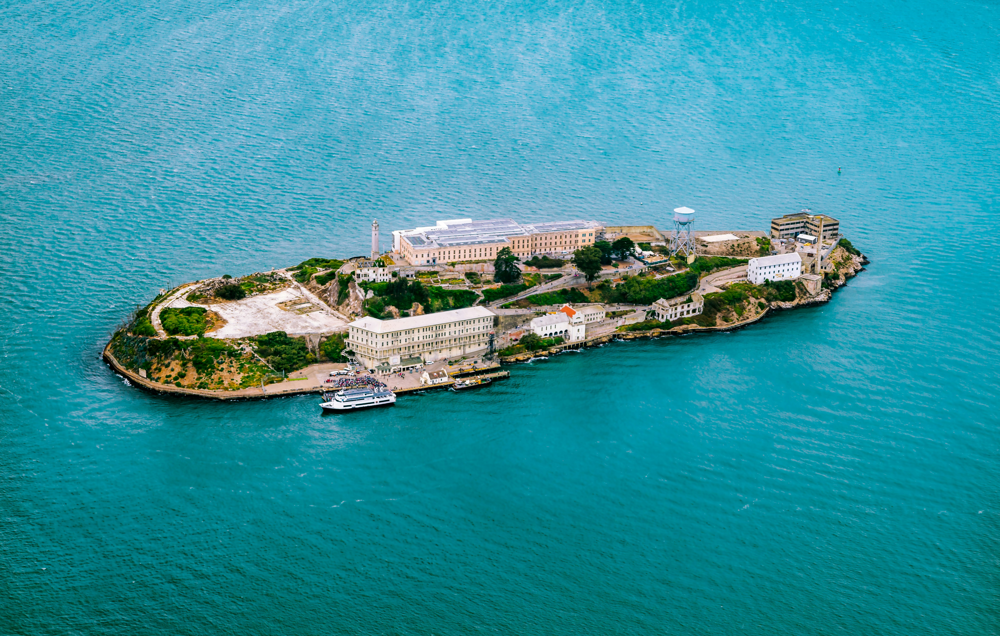
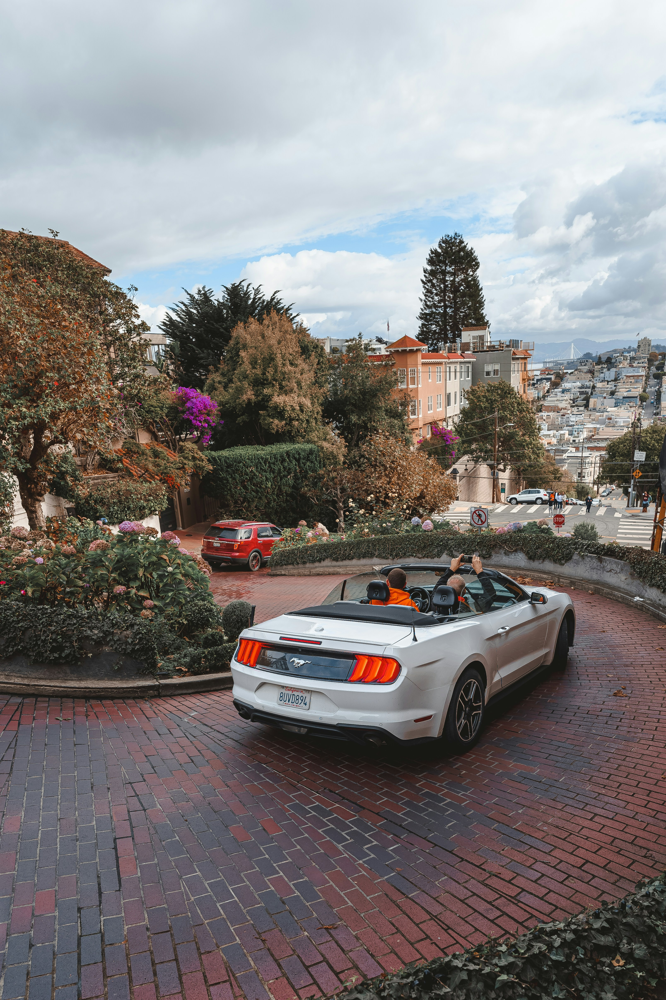
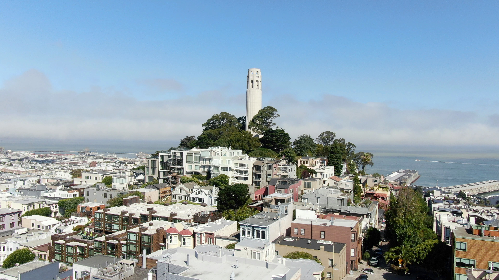

Destination 1: Golden Gate Bridge
An iconic symbol of San Francisco, the Golden Gate Bridge is a suspension bridge spanning the Golden Gate Strait. It offers breathtaking views and is a popular spot for walking and biking

Destination 2: Alcatraz Island
Known as "The Rock," Alcatraz Island was once a notorious federal prison. Today, it's a historic site where visitors can take a ferry ride from Pier 33 and explore the prison with an audio tour
Destination 3: Fisherman's Wharf
A bustling area known for its seafood, shops, and entertainment. It's also home to the famous sea lions at Pier 39 and offers various boat tours and attractions

Destination 4: Golden Gate Park
A large urban park with gardens, museums, and recreational facilities. It's a perfect place for a picnic, a stroll, or a visit to attractions like the California Academy of Sciences and the de Young Museum

Destination 5: Lombard Street
Often referred to as the "crookedest" street in the world, Lombard Street is famous for its eight sharp turns and beautiful landscaping. It's a popular spot for photos and offers a unique driving experience
Destination 6: Coit Tower
Located atop Telegraph Hill, Coit Tower provides panoramic views of the city and the bay. Inside, visitors can see murals from the 1930s and take an elevator to the top for even better vistas
